| 変数 | 観察数 | 平均 | 標準偏差 | 最小値 | 最大値 |
|---|---|---|---|---|---|
| 体重 | 13 | 77.9 | 34.5 | 31.7 | 140.6 |
| ドーナツ | 13 | 5.4 | 6.9 | 0.0 | 20.5 |
03/統計学とR言語
現代政治分析入門1
2026-10-13
出席登録をお願いします

今日の目次
- はじめに
- 記述統計
- 再現可能性
- RとRStudio
- 実習：Rの基本操作
- まとめ
はじめに
本日の目的と到達目標
目的
統計学およびR言語の基本を紹介する。平均や分散・標準偏差など基本的な記述統計量を復習する。科学の条件としての再現可能性を議論し、再現性を確保するための方法を紹介する。データ分析用のプログラミング言語であるR言語を紹介し、自分で使ってみる。
到達目標
- 5つの記述統計量（観察数、平均値、標準偏差、最小値、最大値）をそれぞれ説明できる。
- 研究再現用ファイルの2つの構成要素を列挙できる。
- RおよびRStudioとは何かを説明できる
- Rを使って実際のデータの記述統計とグラフによる要約を作り、解釈できる。
小テストの講評
TBD
記述統計
記述統計と散布図
手元にあるデータの特徴をわかりやすく整理し、要約して表現すること
データを手に入れたら、まず以下を計算
- 観察数（\(n\)）…データがいくつあるか
- 平均…合計を観察で割った値
- 標準偏差…データの散らばり具合を表す尺度
- 最小値、最大値
加えて、散布図を作る（＝プロットする）
- 関係性の把握と外れ値の発見
平均と最小値
\(n\)個のデータ\(X= \{ x_1, x_2, \cdots, x_n \}\)があるとする。
平均 (mean)
合計を観察で割った値 \[ \overline{X} = \frac{\sum_{i=1}^{n} x_i}{n} \]
標準偏差 (standard deviation: SD)
データの散らばり具合を表す尺度
\[ SD = \sqrt{\frac{\sum{(x_i - \overline{X}})^2}{n}} \]
平均と最小値の計算
6人の駒大生が10点満点のテストを受け、その結果のデータは\(X = \{ 5, 6, 6, 8, 4, 9 \}\)になりました。
平均\(\overline{X}\)を求めると… \[ \overline{X} = \frac{5 + 6 + 6 + 8 + 4 + 9}{6} = \frac{38}{6} = 6.33... \]
標準偏差を求めると…
\[ \sqrt{\frac{(5 - \overline{X})^2 + (6 - \overline{X})^2 + (6 - \overline{X})^2 + (8 - \overline{X})^2 + (4 - \overline{X})^2 + (9 - \overline{X})^2}{6}} = 1.70... \]
例：ドーナツと体重
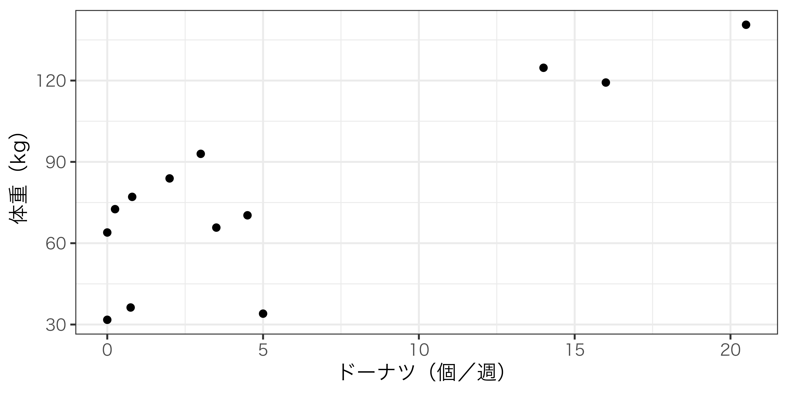
再現可能性
再現可能性（replicability）
同じ手順を踏めば、他人でも同様の結果や結論を得られること
例：

研究再現用ファイル (replication file)
他人が研究結果を再現するために必要なファイル
- コードブック…データを文書化したもの
- データソース、変数の定義など
- 分析用コード…分析結果を出力するためのプログラミングコマンド
コードブックの例
| 変数名 | 説明 |
|---|---|
| wage96 | 1996年に報告された1時間あたりの賃金（ドル単位）（過去1年間の労働時間で給与と賃金を割ったもの） |
| height85 | 成人の身長（インチ単位）、1985年の自己申告による |
| height81 | 青年期の身長（インチ単位）、1981年の自己申告による |
| athletics | 高校で運動部に参加したか（1=参加、0=不参加） |
| clubnum | 高校で所属したクラブの数（運動部、優等生協会、職業クラブを除く） |
| male | 男性（1=男性、0=それ以外） |
分析用コードの例
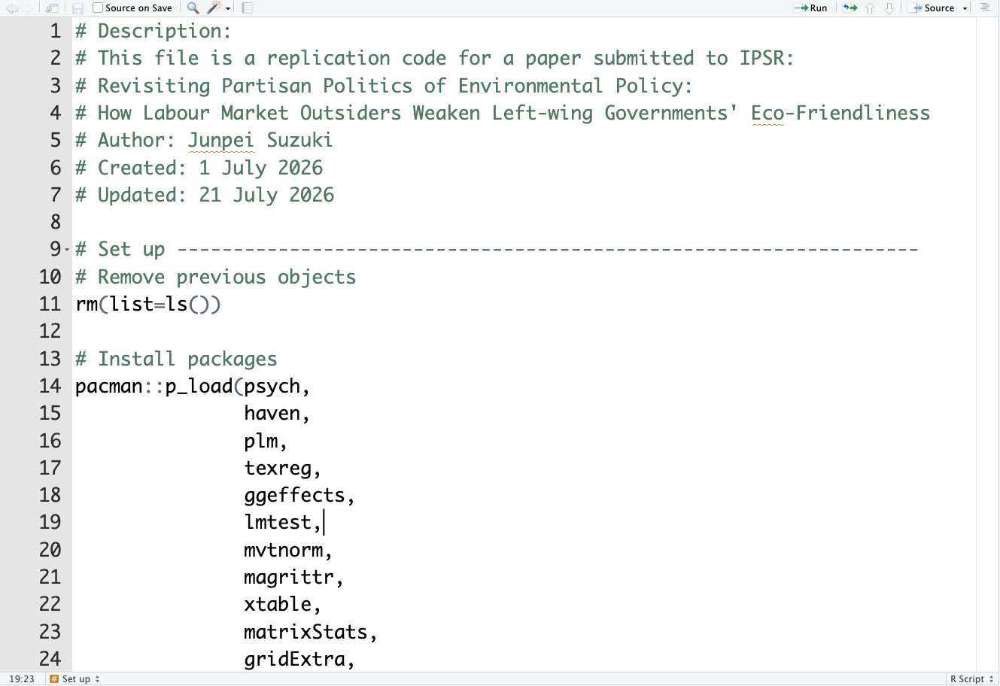
RとRStudio
R
統計、データ分析、作図に特化したプログラミング言語
- 利点：無料で使える
- 難点：少し難しい
RStudio
Rを便利に動かすための統合開発環境
- 無料でダウンロードして使える
- 本授業ではPosit Cloudを使用
- オンライン上でRStudioを動かせる
- これも無料（ただし制限あり）
- 環境に依存せず同じ結果を出力

実習：Rの基本操作
RStudioの最初の画面
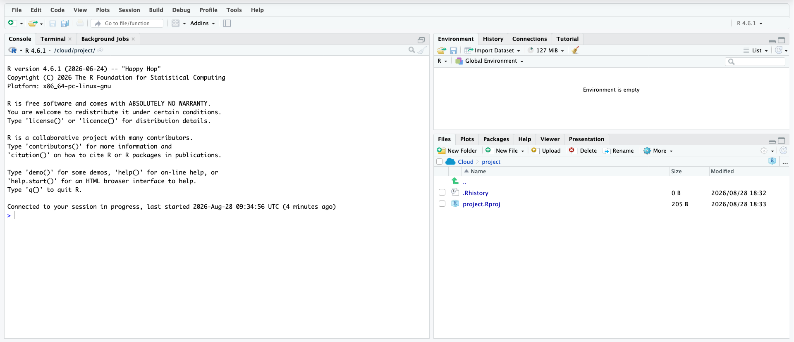
四則演算
コンソールにコマンドを打ち込んで四則演算ができる。
ちなみに#記号より後は完全に無視されるので、コメントを残すのに使える。
スクリプト
コンソールに打ち込んだコマンドは保存されないので、Rスクリプトファイルを使用する。
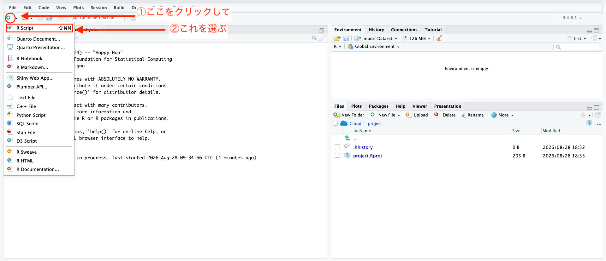
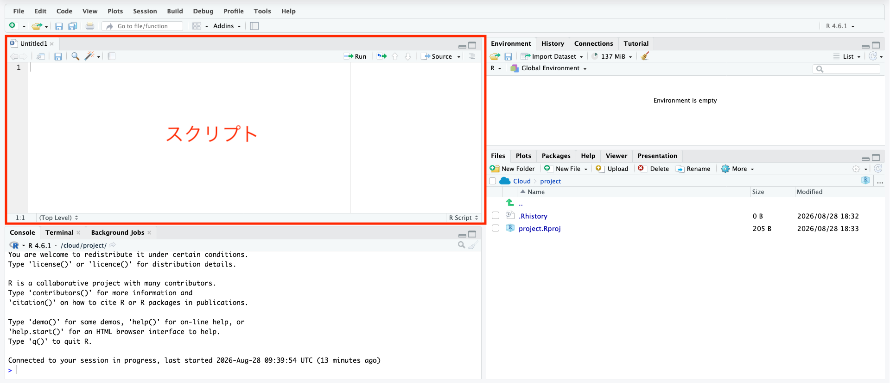
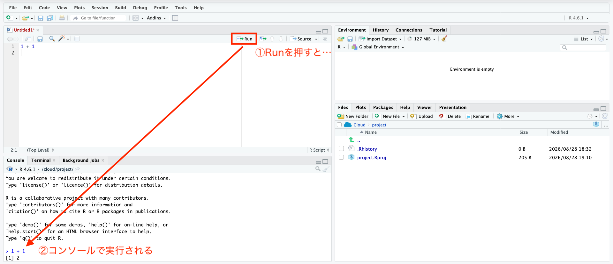
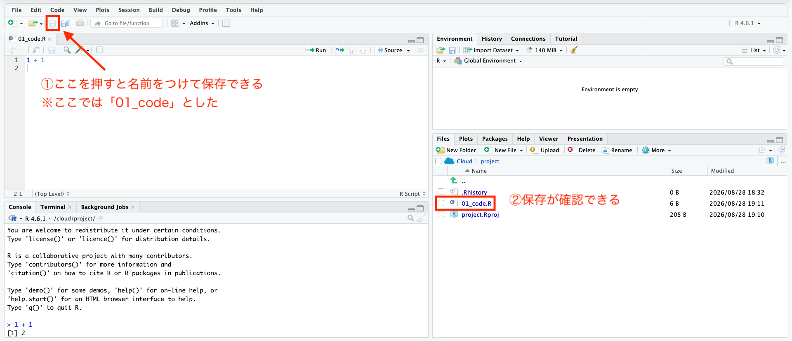
オブジェクト
Rのオブジェクトとは、数値やデータに名前をつけて保存する箱のようなもので、以下のように作れる。
作ったオブジェクトは右上の環境ペーンで確認可能であり、後から呼び出せる。
データオブジェクトのタイプ
ベクトルは複数の数値を集めたもので、c()を使って作れる。
行列は複数のベクトルを集めたもので、matrix()を使って作れる（省略）
データフレームも複数のベクトルを集めたもので、Rでの主力になる。以下のようにdata.frame()関数を使って作成する。
# ベクトルを用意する
weight <- c(124.7, 64.0, 31.8, 34.0, 140.6,
36.3, 72.6, 119.3, 93.0, 83.9,
77.1, 70.3, 65.8) # 体重
donuts <- c(14, 0, 0, 5, 20.5,
0.75, 0.25, 16, 3, 2,
0.8, 4.5, 3.5) # ドーナツ
name <- c("ホーマー", "マージ", "リサ", "バート", "コミックブックガイ",
"バーンズ社長", "スミサーズ", "ウィガム署長", "スキナー校長", "ラブジョイ牧師",
"ネッド・フランダース", "パティ", "セルマ") #名前
# 注意：文字列は""で囲む必要がある。
# ベクトルをまとめる
dta <- data.frame(name, weight, donuts)データフレームの最初の6行を抜き出すにはhead()関数が使える。データの構造を見てみるのに便利。
データフレームの次元（行数と列数）はdim()関数で確認できる。
データフレームの特定のエントリを抜き出すには以下のようにする。
dta[1, 2] # 1行目2列目
## [1] 124.7
dta[6, ] # 6行目
## name weight donuts
## 6 バーンズ社長 36.3 0.75
dta[, 2] # 2列目
## [1] 124.7 64.0 31.8 34.0 140.6 36.3 72.6 119.3 93.0 83.9 77.1 70.3
## [13] 65.8
dta[dta[, 2] > 100, ] # 2列目のエントリが100より大きい、dtaの全ての行
## name weight donuts
## 1 ホーマー 124.7 14.0
## 5 コミックブックガイ 140.6 20.5
## 8 ウィガム署長 119.3 16.0Posit Cloudへのデータのアップロード
外部からダウンロードをRでも使うには、まずPosit Cloudにアップロードする必要がある。
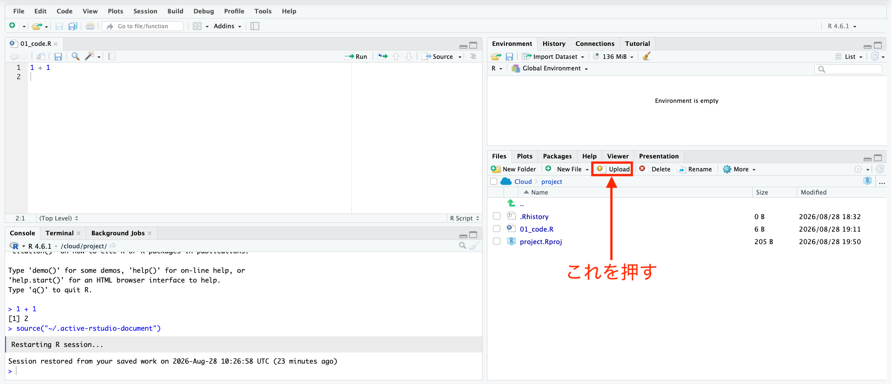
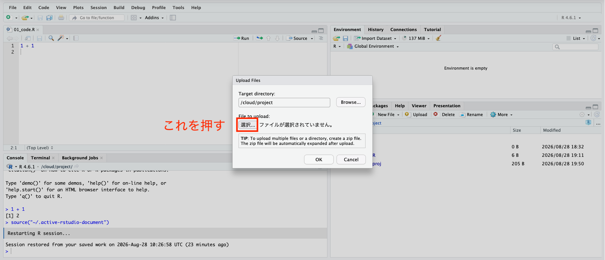
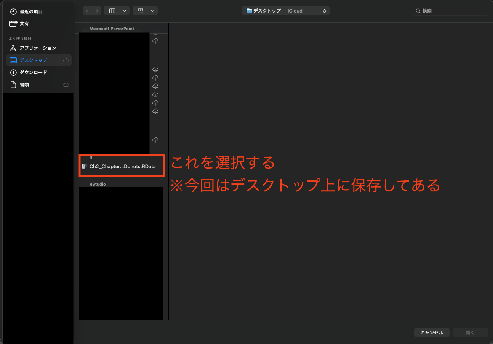
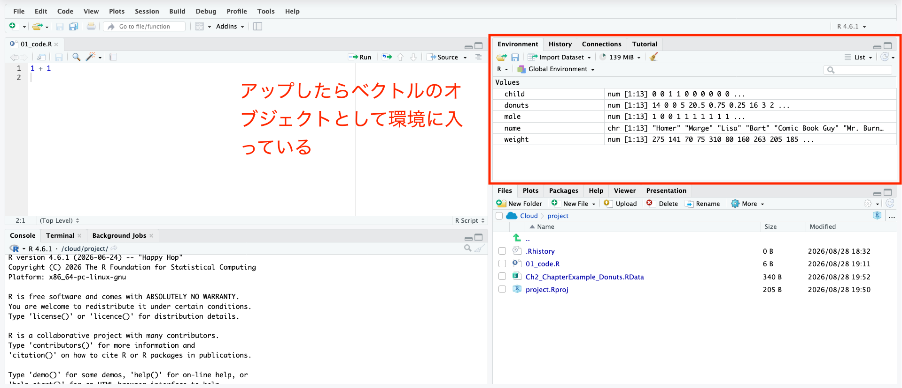
注意：データの変換
ダウンロードしたweightはポンド単位なので、キログラムに変換するためい忘れずに以下のコードを実行しておく。
平均・標準偏差
平均を計算するにはmean()関数を使う。
標準偏差を計算するには、平方根を計算するsqrt()関数と分散を計算するvar()を組み合わせるか、単純にsd()関数を使う。
最小値・最大値と観察数
最小値はmin()、最大値はmax()を使う。
観察数は少し複雑。is.finite()関数で欠損していない場合に1となる変数を作成した上で、sum()関数で合計する。
散布図のプロット
ドーナツを\(x\)軸、体重を\(y\)軸にした散布図は以下で作れる。
まとめ
本日の目的と到達目標
目的
統計学およびR言語の基本を紹介する。平均や分散・標準偏差など基本的な記述統計量を復習する。科学の条件としての再現可能性を議論し、再現性を確保するための方法を紹介する。データ分析用のプログラミング言語であるR言語を紹介し、自分で使ってみる。
到達目標
- 5つの記述統計量（観察数、平均値、標準偏差、最小値、最大値）をそれぞれ説明できる。
- 研究再現用ファイルの2つの構成要素を列挙できる。
- RおよびRStudioとは何かを説明できる
- Rを使って実際のデータの記述統計とグラフによる要約を作り、解釈できる。
次回までに
事後学習
- 授業資料を見直し、目標到達をセルフチェック
- WebClass上でのR実習課題（金曜日まで）
事前学習
- 教科書（第3章冒頭および3.1-3.3: pp.65-86）を読む

統計学とR言語